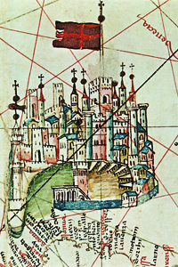

Lezione 9  Prima globalizzazione Europea
Prima globalizzazione Europea

-
65
305
-
185
310
-
230
295
-
255
505
-
205
265
STRALSUNDA
Nasce la Lega Anseatica: tra il XIII e il XIV secolo i centri portuali tedeschi affacciati sul mar Baltico e sul mare del Nord danno vita a una federazione di città mercantili.VENEZIA
Venezia inizia, nel 1200, la lotta con Genova per l’egemonia mediterranea: la sua espansione sarà fermata dalla lega di Cambrai, con la sconfitta di Agnadello (1509), e dalla scoperta dell’America che sposta il centro del commercio europeo.REPUBBLICHE MARINARE
Le Repubbliche marinare italiane ristabiliscono i collegamenti marittimi tra la sponda cristiana e quella musulmana del Mediterraneo. Nell’XI secolo il Mediterraneo torna ad essere un bacino marittimo attraversato regolarmente da navi mercantili.COSTANTINOPOLI
Nel 1082 i veneziani ottengono il privilegio di commerciare nell’Impero bizantino senza essere soggetti a tassazione.
GENOVA
Quello delle Repubbliche marinare non fu per Genova che uno dei periodi di massimo splendore di una città che sempre è stata molto legata alla sua potenza navale; in questa miniatura, tratta da una carta nautica del Quattrocento, vediamo l’imponente porto. Genova fonda il suo impero coloniale tra il 1060 e la fine del XIII secolo.